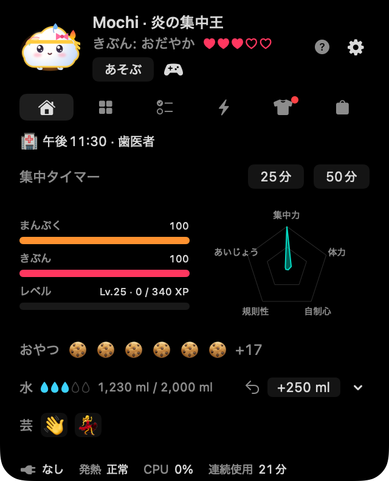
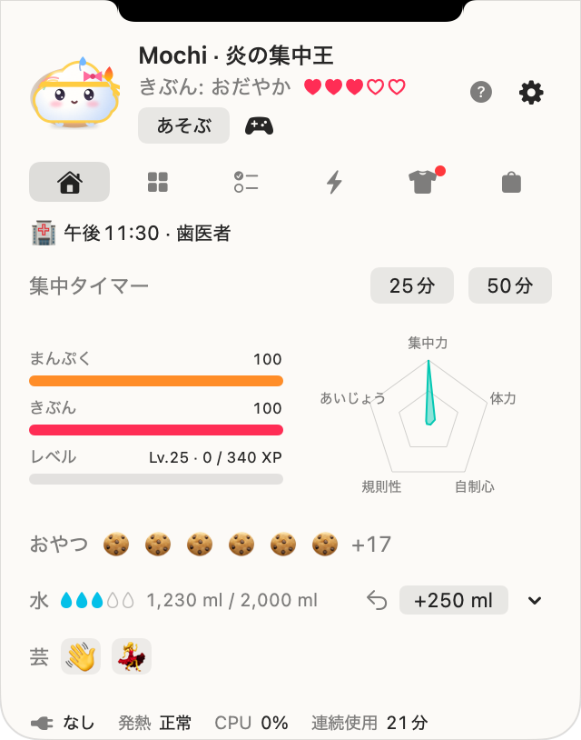
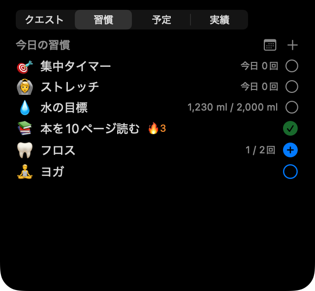

コンコン、ノキだよ！
MacBookのノッチのそばに住む、もちもちの小さな友だち。作業中に水を飲むこと、伸びをすること、ちゃんと休むこと、今日の予定をやさしく思い出させてくれます。自分を大切にするほど、卵からかえって一緒に育っていきます。


5人の友だち、全員無料
☁️ モンシル
雲の赤ちゃん気分がそのまま天気に。おなかがすくと小雨、今日の水分目標を達成すると晴れ。
🧶 ボクスル
もふもふの毛玉充電中はおなかを床にぺたん。ポインターが近づくと耳がぴんと立ちます。
🍮 タンタン
プリンMacが熱くなるとカラメルをたらしてとろけ、充電中はうれしそうにぷるぷる。
🌱 コンコン
新芽の豆今日の水分目標を達成するとキラキラ。眠くなると葉っぱがしおれます。
🌙 マロ
月うさぎのマシュマロ夜9時を過ぎると、おでこの三日月が光ります。
季節の友だち
Noki Plusのメンバーは季節ごとに限定の友だちに出会えます。季節が過ぎても、Plusが終わってもずっと一緒です。秋はウネン（銀杏のおもち）とタンプン（もみじ）、冬はヌンソンイ（ふわふわの雪玉）とホッパン（マフラーを巻いた肉まん）。


Macと一緒に呼吸します
バッテリー、充電、熱、キーボードやマウスの動き、画面のスリープに反応します。どれもMacの中だけで読み取ります。顔には13の気持ちが表れ、オンにすれば外の天気に合わせて傘やマフラーも身につけます。
一日を見守ります
💧 水分とストレッチ
ワンクリックで1杯を記録。自分のカップを登録したり、Macから離れていたときの分も追加できます。長く座っていると伸びを勧め、25分・50分の集中タイマーもあります。
🌱 習慣と予定
回数や時間で決める自分の習慣、1か月の習慣カレンダー、リマインド付きの予定、そして（つなげれば）Macのカレンダー。
🏆 クエストと実績
毎日3つのクエスト、35の実績、週と月のチャレンジ。ごほうびのおやつで服が買えます。
🎾 あそび
なでたり、画面の上でボールを投げたり、3つのミニゲームで遊んだり。コードを交換すれば友だちとバトルも。



軽くて、Macの中だけで
呼吸のアニメーションは描き直しをしないので、ふだんのCPU使用率はほぼ0%。画面がスリープするとノキも休みます。ペットと記録はあなたのMacの中だけに。アカウントもサーバーもありません。詳しくはプライバシーポリシーへ。
準備中です
モチノキは今、友だちと一緒に仕上げているところです。Mac App Storeで出会えるようになったら、こことアップデート情報でお知らせします。
- Appleシリコン搭載Mac（M1以降）、macOS 14 Sonoma以降
- ノッチのないMacや外部ディスプレイでは、画面上部の中央に仮想ノッチが現れます。メニューバーのアイコンに切り替えることもできます。
- 5人の友だちと主な機能はすべて無料。Noki Plus（任意）では、習慣が無制限になり、毎月のノキからの手紙と季節の友だちが加わります。

ノキと一日すごしてみて、
どの友だちがいちばん好きか教えてね 💌
すべての絵はアプリの実際の描画コードで描いています。